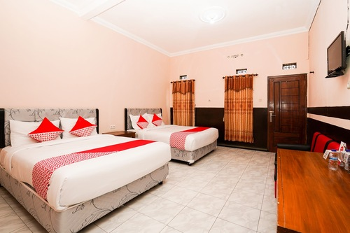
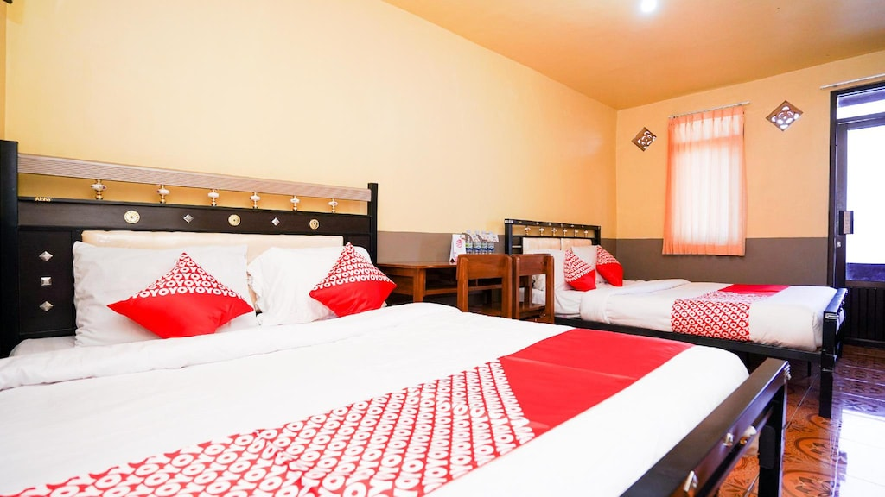
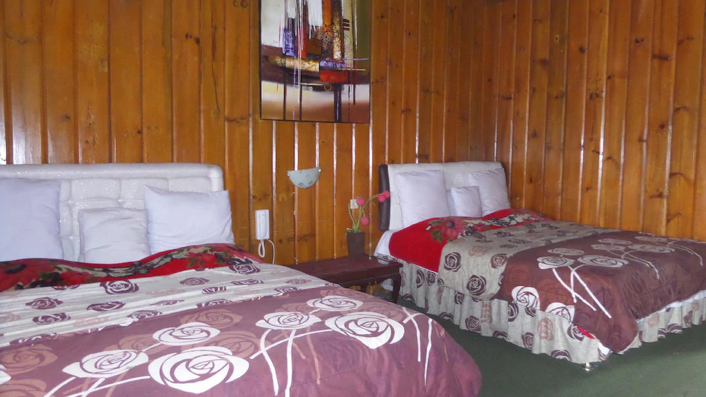
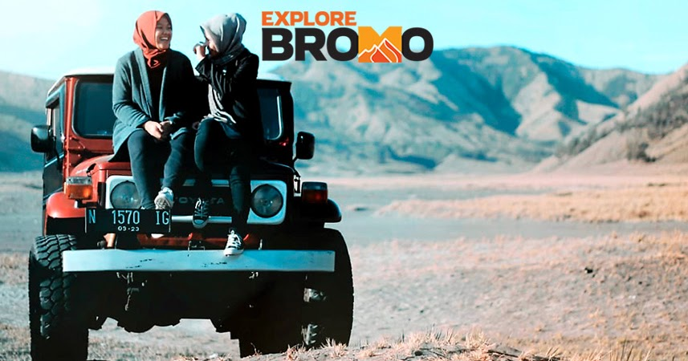
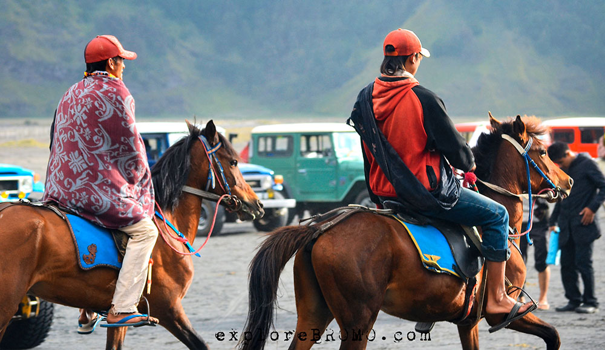

-PENGINAPAN-
1. OYO 1048 Rahayu

Jl. Raya Bromo NO 0, Ngadisari,Sukapura,Probolinggo , Jawa Timur
Rp. 289.051,00/malam
2. Tengger Indah Homestay

Jl. Raya Bromo, Cemorolawang, Ngadisari,Sukapura,Probolinggo,Jawa Timur/0852 3295 6606
Rp. 271.730,00/malam
3. Cemara Indah Hotel Probolinggo

Jl. Cemara Lawang, Cemorolawang, Ngadisari, Sukapura, Probolinggo, Jawa Timur/0335 5410 019
Rp. 446.900,00/malam
-SEWA JEEP-

A. SEWA JEEP BROMO DARI CEMORO LAWANG/SUKAPURA (PROBOLINGGO)
Penanjakan 2 – Kawah Bromo: 475.000
Penanjakan 2 – Kawah Bromo + Pasir Berbisik dan Savana (Bukit Teletubbies) : Rp. 600.000
Penanjakan 1 – Kawah Bromo : Rp. 525.000
Penanjakan 1 – Kawah Bromo + Pasir Berbisik dan Savana (Bukit Teletubbies) : Rp. 650.000
B. SEWA JEEP BROMO DARI WONOKITRI (PASURUAN)
Penanjakan 1 – Kawah Bromo : Rp. 525.000
Penanjakan 1 – Kawah Bromo + Pasir Berbisik dan Savana (Bukit Teletubbies) : Rp. 650.000
C. SEWA JEEP BROMO DARI MALANG (RUTE TERLENGKAP)
Malang – Penanjakan 1 – Bromo – Pasir Berbisik – Savanna – Malang : Rp. 1.200.000
Malang – Penanjakan 1 – Bromo – Pasir Berbisik – Savanna – Coban Pelangi – Malang : Rp. 1.250.000
Malang – Penanjakan 1 – Bromo – Pasir Berbisik – Savana – Surabaya : Rp.1.550.000
Malang – Penanjakan 1 – Bromo – Surabaya : Rp.1.450.000
Malang – Penanjakan 2 – Bromo – Pasir Berbisik – Savana – Air Terjun Madakaripura – Malang : Rp. 1.400.000
D. TRANSPORT SEMERU (RANUPANE)
Malang – Ranupane : Rp. 900.000
Malang – Ranupane (antar-jemput) : Rp.1.700.000
NB: Harga bisa berubah pada waktu libur panjang atau high season
-SEWA KUDA-

untuk penyewaan kuda harganya berkisar Rp.125.000 - Rp. 150.000 pp(pulang pergi) dari parkiran jeep menuju lokasi.
- MUSHOLA -
- PUSAT OLEH-OLEH -
- WISATA KULINER -
- TOILET -
- POS KEAMANAN -